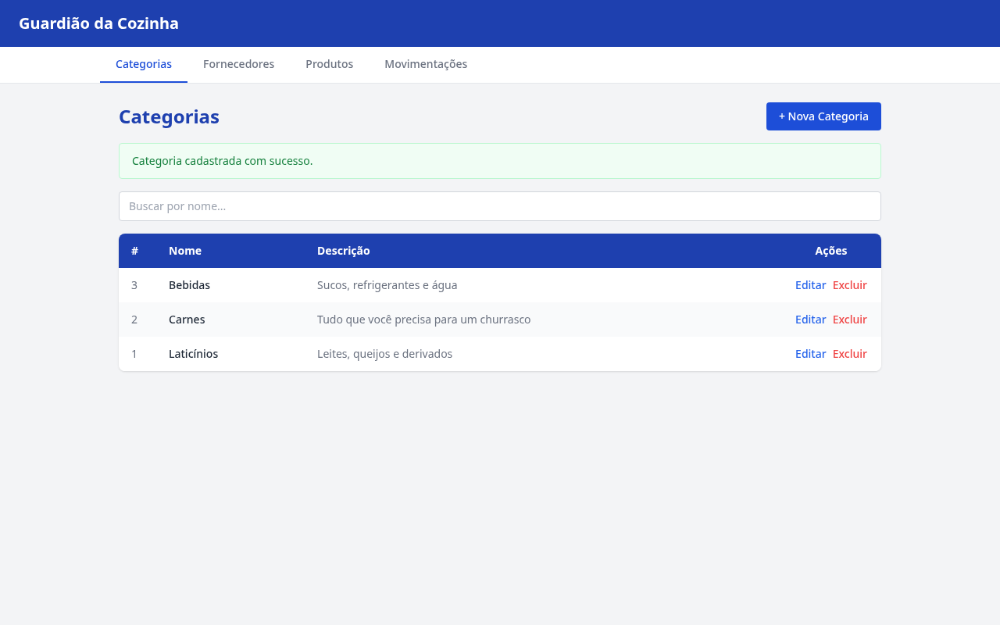
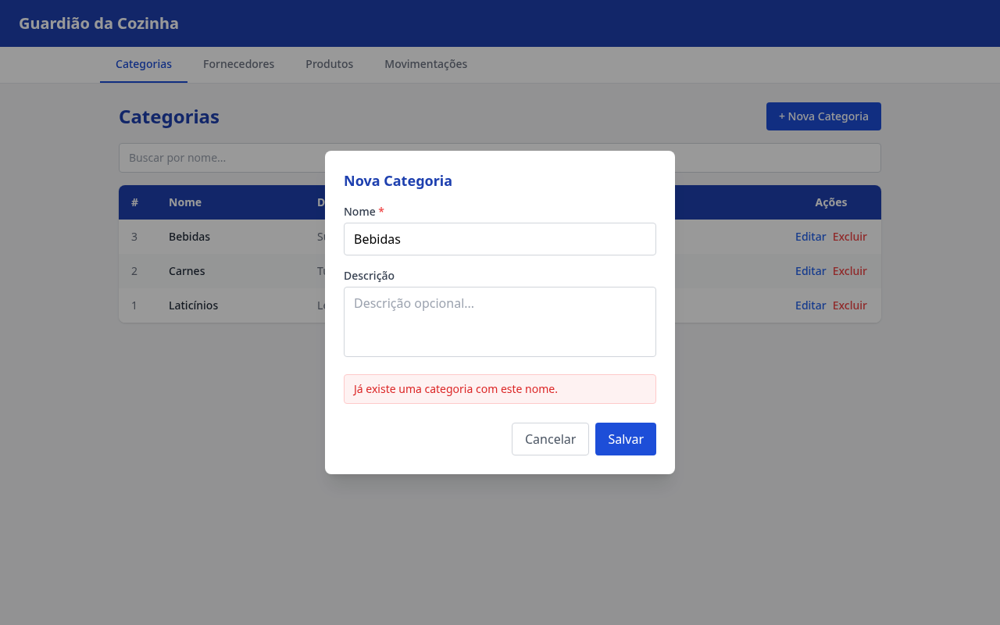
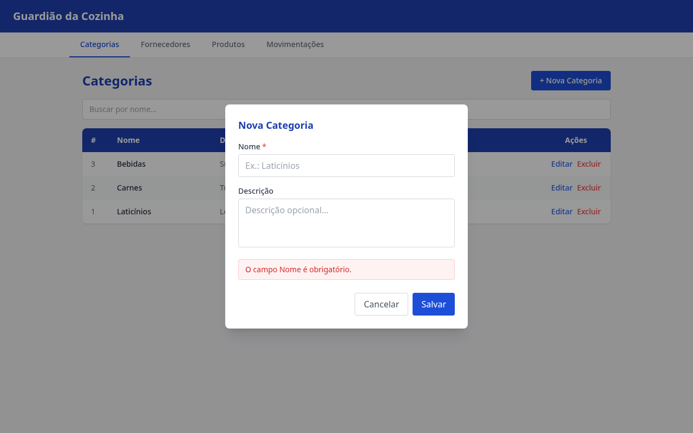
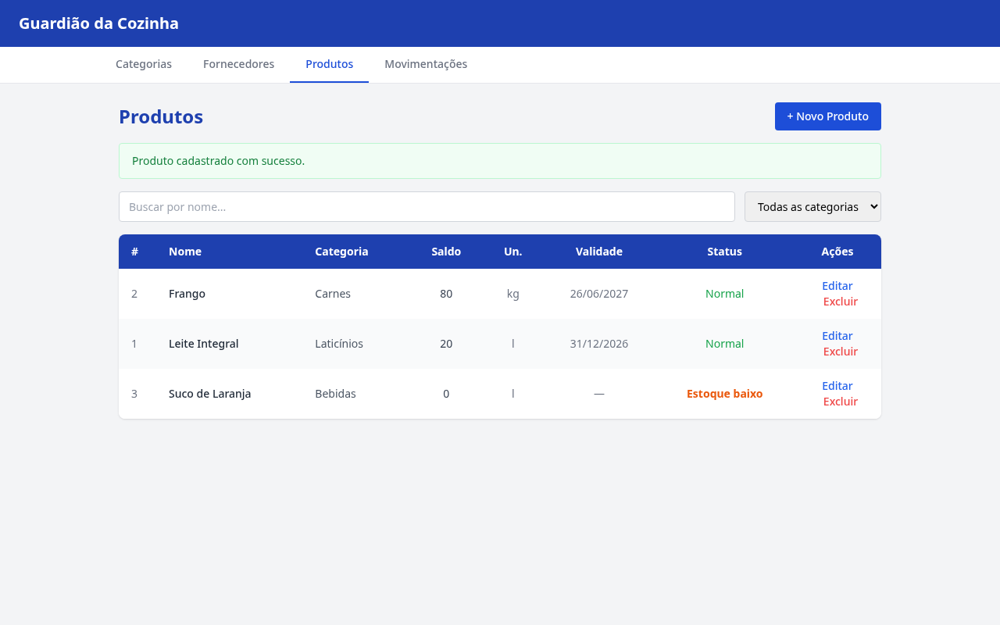
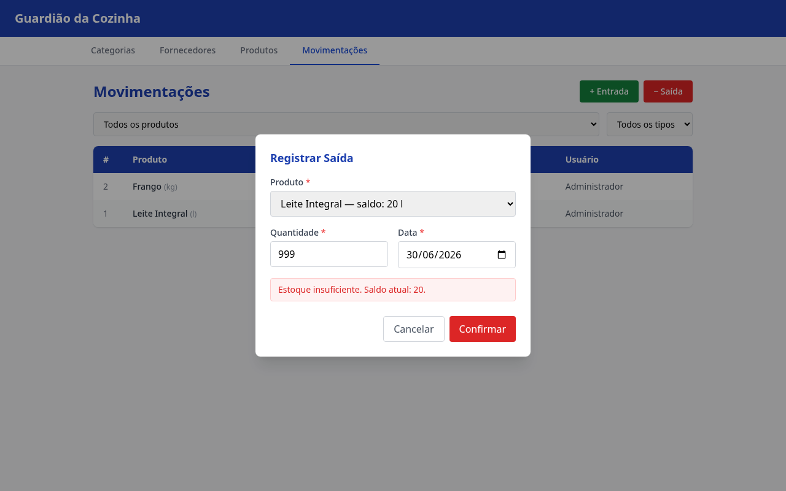

Testes de Validação / Testes Funcionais de Sistema
| Funcionalidade | Gerenciamento de Categorias — Cadastrar nova categoria |
| Ações (passo a passo) |
|
| Dados de entrada |
Nome: BebidasDescrição: Sucos, refrigerantes e água
|
| Dados de saída esperados |
Mensagem de confirmação em verde: "Categoria cadastrada com sucesso." Nova linha com nome Bebidas e descrição Sucos, refrigerantes e água aparece na tabela de categorias. |
| Print screen da saída |  |
| Resultado | APROVADO O sistema exibiu "Categoria cadastrada com sucesso." e a categoria Bebidas aparece na listagem ordenada alfabeticamente, conforme especificado em RF002 / RN02. |
| Funcionalidade | Gerenciamento de Categorias — Validação de unicidade do nome |
| Ações (passo a passo) |
|
| Dados de entrada | Nome: Bebidas (duplicado — já existe no banco) |
| Dados de saída esperados |
Mensagem de erro em vermelho dentro do modal: "Já existe uma categoria com este nome." Nenhum novo registro deve ser inserido. O modal permanece aberto. |
| Print screen da saída |  |
| Resultado | APROVADO O sistema exibiu a mensagem de erro esperada e bloqueou a inserção duplicada, respeitando a Regra de Negócio RN02 de RF002 (unicidade do nome — case-insensitive). |
| Funcionalidade | Gerenciamento de Categorias — Validação de campo obrigatório |
| Ações (passo a passo) |
|
| Dados de entrada | Nome: (vazio)Descrição: (vazio) |
| Dados de saída esperados |
Mensagem de erro em vermelho: "O campo Nome é obrigatório." Nenhum registro inserido. O modal permanece aberto aguardando correção. |
| Print screen da saída |  |
| Resultado | APROVADO O sistema rejeitou a submissão e exibiu a mensagem de validação correta, garantindo a Regra de Negócio RN01 de RF002 (Nome obrigatório, máx. 60 caracteres). |
| Funcionalidade | Gerenciamento de Produtos — Cadastrar novo produto vinculado a uma categoria |
| Ações (passo a passo) |
|
| Dados de entrada |
Nome: Suco de LaranjaCategoria: BebidasUnidade: lEstoque mínimo: 5Data de validade: (não informada)
|
| Dados de saída esperados |
Mensagem de confirmação em verde: "Produto cadastrado com sucesso." Produto Suco de Laranja aparece na listagem com categoria Bebidas, saldo 0 e status Estoque baixo (saldo ≤ estoque mínimo). |
| Print screen da saída |  |
| Resultado | APROVADO Produto cadastrado com sucesso e vinculado à categoria Bebidas. O sistema calculou o saldo inicial como 0 e classificou o status como Estoque baixo corretamente (RN02 de RF007: saldo ≤ estoque mínimo). |
| Funcionalidade | Gerenciamento de Movimentações — Impedir saída com estoque insuficiente |
| Ações (passo a passo) |
|
| Dados de entrada |
Produto: Leite Integral (saldo = 20 l)Quantidade: 999Data: 30/06/2026 (data atual)
|
| Dados de saída esperados |
Mensagem de erro em vermelho no modal: "Estoque insuficiente. Saldo atual: 20." Nenhuma movimentação registrada. O modal permanece aberto para correção. |
| Print screen da saída |  |
| Resultado | APROVADO O sistema rejeitou a operação e exibiu corretamente o saldo atual disponível, respeitando a regra de negócio de RF011 que proíbe saídas com quantidade superior ao saldo calculado (Σentradas − Σsaídas na tabela Movimentação). |